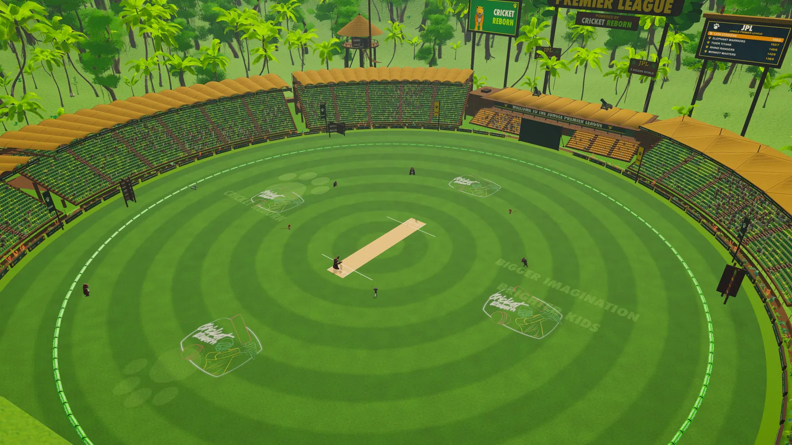
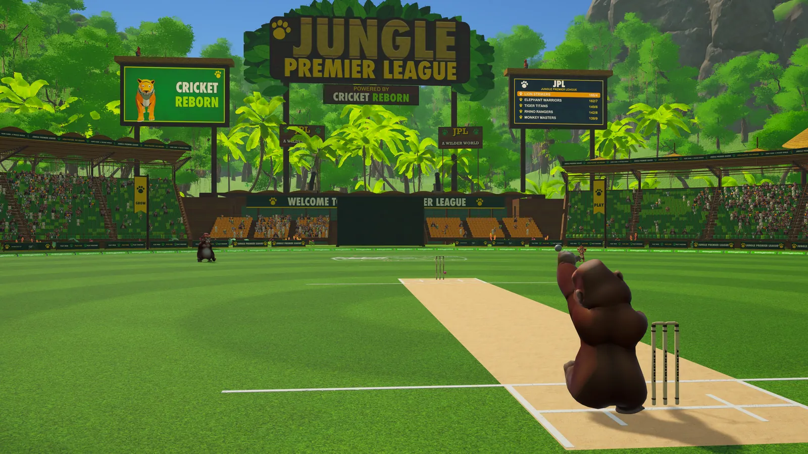
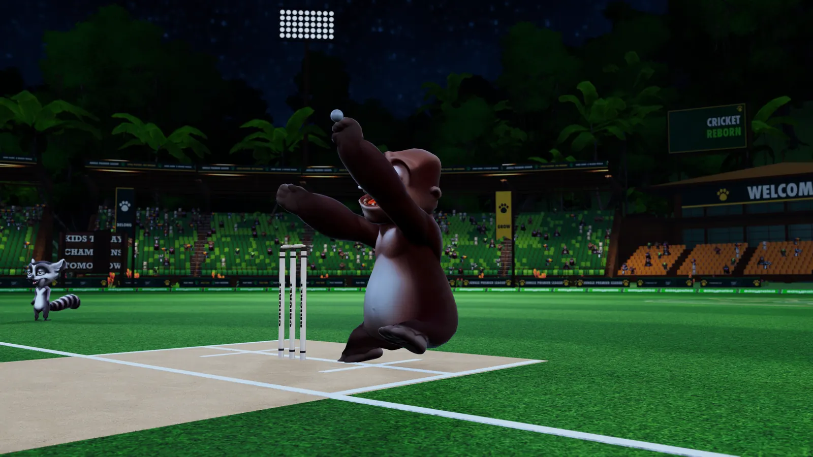
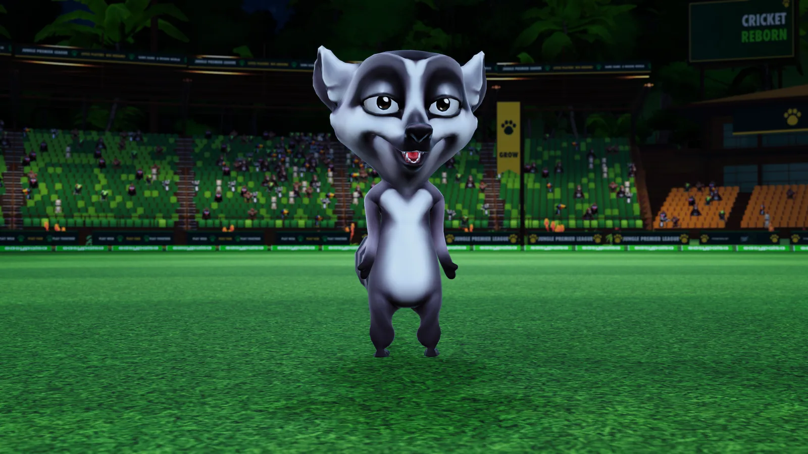
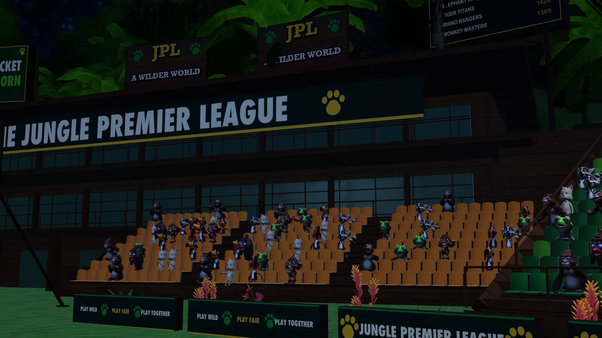

01 / 04
The idea
Jungle Premier League takes the idea behind Cricket Reborn — batting against a real bowling machine timed to a bowler on screen — and turns it into a game for kids. The bowlers and fielders are jungle animals, the ground sits in the middle of a jungle, and the whole thing is playful rather than competitive.
I'm building it on the same system as Cricket Reborn, so the real-ball bay, the bowling machine link and the match flow carry over, and the work goes into everything a kid sees and hears.

02 / 04
What I've built so far
- An animal cast. 21 animal characters set up as bowlers and fielders, each with its own run-up, idle and sounds, and a fresh mix of fielders every match. The umpire is a turtle.
- A ground of its own. A daytime jungle ground with the league's own branding and jungle sounds in place of commentary — and confetti, leaves and flowers when someone hits a four or a six.
- Made for kids. The machine always bowls at its easiest setting, and the league table doesn't rank teams against each other.
- Cutscenes. Its own set of reaction cutscenes, kept fully separate from Cricket Reborn's footage, and a Cutscene Browser tool for watching, judging and placing every clip.
- Long-run testing. An overnight test setup that plays the game unattended for hours to catch problems before players do.




03 / 04
Status
Jungle Premier League is in development at XRev Studios. Footage and more details are coming once it's ready to show.
04 / 04